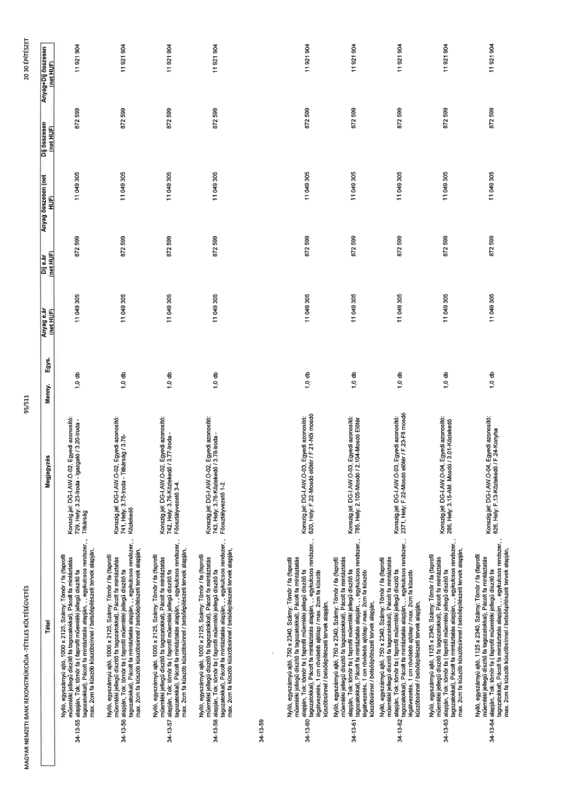

| Tétel | Megjegyzés | Menny. | Egys. | Anyag e.ár (net HUF) | Díj e.ár (net HUF) | Anyag összesen (net HUF) | Díj összesen (net HUF) | Anyag+Díj összesen (net HUF) |
|---|---|---|---|---|---|---|---|---|
| 34-13-55 | Nyíló, egyszárnyú ajtó, 1000 x 2125, Szárny: Tömör / fa (faprofil műemléki jellegű díszítő fa tagozatokkal), Pácolt fa mintáztatás alapján, Tok: tömör fa (faprofil műemléki jellegű díszítő fa tagozatokkal), Pácolt fa mintáztatás alapján,, egykulcsos rendszer,, max. 2cm fa küszöb küszöbsínnel / belsőépítészeti tervek alapján,; Konszig.jel: DG-I.AW.O-02, Egyedi azonosító: 729, Hely: 3.23-Iroda - Igazgató / 3.20-Iroda - Titkárság | 1,0 | db | 11 049 305 | 872 599 | 11 049 305 | 872 599 | 11 921 904 |
| 34-13-56 | Nyíló, egyszárnyú ajtó, 1000 x 2125, Szárny: Tömör / fa (faprofil műemléki jellegű díszítő fa tagozatokkal), Pácolt fa mintáztatás alapján, Tok: tömör fa (faprofil műemléki jellegű díszítő fa tagozatokkal), Pácolt fa mintáztatás alapján,, egykulcsos rendszer,, max. 2cm fa küszöb küszöbsínnel / belsőépítészeti tervek alapján,; Konszig.jel: DG-I.AW.O-02, Egyedi azonosító: 741, Hely: 3.75-Iroda - Titkárság / 3.76-Közlekedő | 1,0 | db | 11 049 305 | 872 599 | 11 049 305 | 872 599 | 11 921 904 |
| 34-13-57 | Nyíló, egyszárnyú ajtó, 1000 x 2125, Szárny: Tömör / fa (faprofil műemléki jellegű díszítő fa tagozatokkal), Pácolt fa mintáztatás alapján, Tok: tömör fa (faprofil műemléki jellegű díszítő fa tagozatokkal), Pácolt fa mintáztatás alapján,, egykulcsos rendszer,, max. 2cm fa küszöb küszöbsínnel / belsőépítészeti tervek alapján,; Konszig.jel: DG-I.AW.O-02, Egyedi azonosító: 742, Hely: 3.75-Közlekedő / 3.77-Iroda - Főosztályvezető 3-4. | 1,0 | db | 11 049 305 | 872 599 | 11 049 305 | 872 599 | 11 921 904 |
| 34-13-58 | Nyíló, egyszárnyú ajtó, 1000 x 2125, Szárny: Tömör / fa (faprofil műemléki jellegű díszítő fa tagozatokkal), Pácolt fa mintáztatás alapján, Tok: tömör fa (faprofil műemléki jellegű díszítő fa tagozatokkal), Pácolt fa mintáztatás alapján,, egykulcsos rendszer,, max. 2cm fa küszöb küszöbsínnel / belsőépítészeti tervek alapján,; Konszig.jel: DG-I.AW.O-02, Egyedi azonosító: 743, Hely: 3.75-Közlekedő / 3.78-Iroda - Főosztályvezető 1-2. | 1,0 | db | 11 049 305 | 872 599 | 11 049 305 | 872 599 | 11 921 904 |
| 34-13-59 | NaN | NaN | NaN | 0 | 0 | 0 | 0 | 0 |
| 34-13-60 | Nyíló, egyszárnyú ajtó, 750 x 2340, Szárny: Tömör / fa (faprofil műemléki jellegű díszítő fa tagozatokkal), Pácolt fa mintáztatás alapján, Tok: tömör fa (faprofil műemléki jellegű díszítő fa tagozatokkal), Pácolt fa mintáztatás alapján,, egykulcsos rendszer,, légátvezetés, 1 cm rövidebb ajtólap / max. 2cm fa küszöb küszöbsínnel / belsőépítészeti tervek alapján,; Konszig.jel: DG-I.AW.O-03, Egyedi azonosító: 620, Hely: F.22-Mosdó előtér / F.21-Női mosdó | 1,0 | db | 11 049 305 | 872 599 | 11 049 305 | 872 599 | 11 921 904 |
| 34-13-61 | Nyíló, egyszárnyú ajtó, 750 x 2340, Szárny: Tömör / fa (faprofil műemléki jellegű díszítő fa tagozatokkal), Pácolt fa mintáztatás alapján, Tok: tömör fa (faprofil műemléki jellegű díszítő fa tagozatokkal), Pácolt fa mintáztatás alapján,, egykulcsos rendszer,, légátvezetés, 1 cm rövidebb ajtólap / max. 2cm fa küszöb küszöbsínnel / belsőépítészeti tervek alapján,; Konszig.jel: DG-I.AW.O-03, Egyedi azonosító: 785, Hely: 2.105-Mosdó / 2.104-Mosdó Előtér | 1,0 | db | 11 049 305 | 872 599 | 11 049 305 | 872 599 | 11 921 904 |
| 34-13-62 | Nyíló, egyszárnyú ajtó, 750 x 2340, Szárny: Tömör / fa (faprofil műemléki jellegű díszítő fa tagozatokkal), Pácolt fa mintáztatás alapján, Tok: tömör fa (faprofil műemléki jellegű díszítő fa tagozatokkal), Pácolt fa mintáztatás alapján,, egykulcsos rendszer,, légátvezetés, 1 cm rövidebb ajtólap / max. 2cm fa küszöb küszöbsínnel / belsőépítészeti tervek alapján,; Konszig.jel: DG-I.AW.O-03, Egyedi azonosító: 2371, Hely: F.22-Mosdó előtér / F.23-Fiú mosdó | 1,0 | db | 11 049 305 | 872 599 | 11 049 305 | 872 599 | 11 921 904 |
| 34-13-63 | Nyíló, egyszárnyú ajtó, 1125 x 2340, Szárny: Tömör / fa (faprofil műemléki jellegű díszítő fa tagozatokkal), Pácolt fa mintáztatás alapján, Tok: tömör fa (faprofil műemléki jellegű díszítő fa tagozatokkal), Pácolt fa mintáztatás alapján,, egykulcsos rendszer,, max. 2cm fa küszöb küszöbsínnel / belsőépítészeti tervek alapján,; Konszig.jel: DG-I.AW.O-04, Egyedi azonosító: 286, Hely: 3.15-AM. Mosdó / 3.01-Közlekedő | 1,0 | db | 11 049 305 | 872 599 | 11 049 305 | 872 599 | 11 921 904 |
| 34-13-64 | Nyíló, egyszárnyú ajtó, 1125 x 2340, Szárny: Tömör / fa (faprofil műemléki jellegű díszítő fa tagozatokkal), Pácolt fa mintáztatás alapján, Tok: tömör fa (faprofil műemléki jellegű díszítő fa tagozatokkal), Pácolt fa mintáztatás alapján,, egykulcsos rendszer,, max. 2cm fa küszöb küszöbsínnel / belsőépítészeti tervek alapján,; Konszig.jel: DG-I.AW.O-04, Egyedi azonosító: 626, Hely: F.13-Közlekedő / F.24-Konyha | 1,0 | db | 11 049 305 | 872 599 | 11 049 305 | 872 599 | 11 921 904 |
